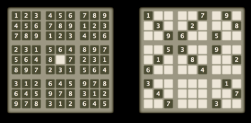

Sudoku geniet van toegenomen populariteit de laatste jaren.
In een rooster van 9 × 9 cellen moeten de getallen 1 tot 9 zo ingevuld worden dat in elke rij en in elke kolom elk getal precies één keer voorkomt. En alsof dat nog niet genoeg is, wordt ook nog gevraagd dat de getallen precies één keer voorkomen in elk geaccentueerd 3 × 3 blok.
In een typische Sudokupuzzel zijn al enkele cellen ingevuld. De puzzel bestaat erin het rooster te vervolledigen zoals gevraagd. De moeilijkheidsgraad varieert van kinderlijk eenvoudig tot aartsmoeilijk.
|
 |
De (zonder twijfel) eenvoudigste en de (naar men zegt) moeilijkste Sudoku.